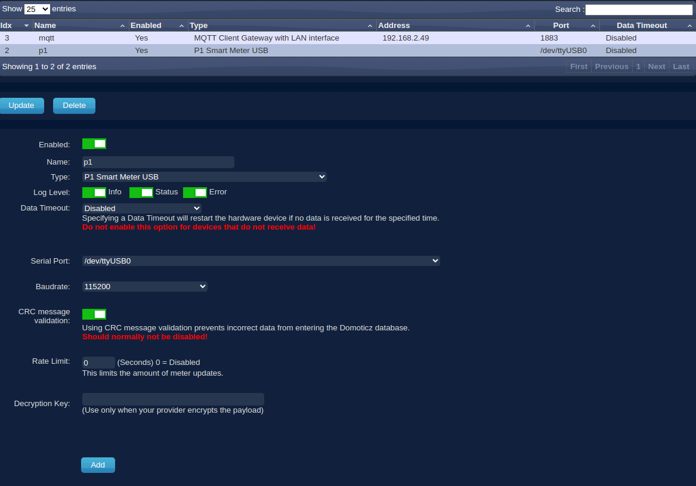
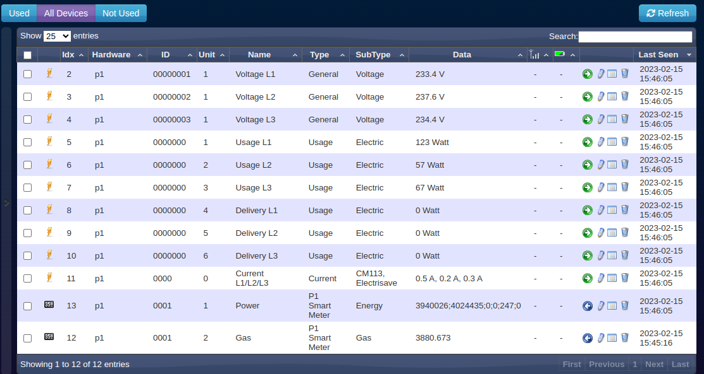

Slimme meter aansluitengeïnstalleerd
We gaan een slimme meter aansluiten. Een slimme meter is een meter die we gebruiken om te meten hoeveel stroom en gas we verbruiken in huis. We gaan dit doen met behulp van een Domoticz container. We leren ook hoe we de gegevens als MQTT bericht naar de Node-red broker kunnen versturen.
Inhoud
Wat je nodig hebt
- Een Raspberry Pi 3B+ met het besturingssysteem Ubuntu Server 22.04.
- Docker, Portainer en Domoticz zijn geïnstalleerd.
- De Raspberry Pi heeft verbinding met het Internet.
- P1 Slimme meter kabel.
Controleer of je slimme meter die je thuis gebruikt in het lijstje staat van de kabel en wat de snelheid van de omzetting moet zijn (9600 of 115200). Zelf heb ik een Kaifa MC304 die met een snelheid van 115200 Baud seriele gegevens naar parallel omzet. De kabel heeft aan de ene kant een USB aansluiting en aan de andere kant een telefoonaansluiting (rj11-connector).
Wat je gaat doen
Stap 1 - USB van de kabel op de Raspberry Pi aansluiten.
Stap 2 - Voeding aanzetten van de Raspberry Pi.
Stap 3 - Ander gedeelte van de kabel aansluiten op je Slimme Meter.
Stap 4 - Maak een device aan voor power en voor gas.
De P1-kabel wordt gebruikt om de gegevens van de slimme meter naar de Raspberry Pi te verzenden, zodat je in Domoticz kunt zien hoeveel elektriciteit of gas je hebt verbruikt.
Stap 1 - USB van de kabel op de Raspberry Pi aansluiten
Sluit de P1 kabel aan op de Raspberry Pi.
Wanneer je een USB P1-kabel aansluit op een Raspberry Pi 3B+, wordt de seriële poort (ook bekend als ttyUSB0) toegewezen aan de verbinding. Hier is een uitleg over hoe dit werkt:
USB P1-kabel: Een USB P1-kabel is een specifiek type USB-kabel dat wordt gebruikt om verbinding te maken met slimme energiemeters, zoals de Nederlandse P1 Slimme Meter. Deze kabels hebben aan de ene kant een USB-connector en aan de andere kant een RJ11-connector die in de P1-poort van de energiemeter wordt gestoken.
Raspberry Pi 3B+: De Raspberry Pi 3B+ is een populaire single-board computer die verschillende I/O-poorten en interfaces heeft, waaronder USB-poorten. Deze USB-poorten kunnen worden gebruikt om externe apparaten, zoals de USB P1-kabel, aan te sluiten.
TTY: TTY staat voor "teletypewriter" en verwijst naar de seriële poorten op een computer of microcontroller. In Linux-systemen, zoals de Raspberry Pi, worden seriële poorten vaak weergegeven als /dev/ttyUSB0, /dev/ttyUSB1, enz., afhankelijk van het aantal aangesloten apparaten.
Wanneer je de USB P1-kabel op een vrije USB-poort van de Raspberry Pi 3B+ aansluit, zal het besturingssysteem van de Raspberry Pi de kabel detecteren en automatisch een apparaatbestand toewijzen, zoals /dev/ttyUSB0. Dit bestand vertegenwoordigt de verbinding met de P1-poort van de slimme energiemeter.
Je kunt dit apparaatbestand gebruiken om gegevens van de slimme energiemeter te lezen. Bijvoorbeeld, als je programma's of scripts schrijft, kun je de /dev/ttyUSB0-interface gebruiken om te communiceren met de slimme energiemeter en gegevens zoals energieverbruik, spanning of stroomsterkte uit te lezen.
Het is belangrijk op te merken dat het toewijzen van de ttyUSB0-aanduiding niet uniek is voor de Raspberry Pi 3B+. Het hangt af van het besturingssysteem en de configuratie. Het kan variëren afhankelijk van het aantal aangesloten USB-apparaten en de volgorde waarin ze worden gedetecteerd. Dus als je meerdere USB-apparaten hebt aangesloten op je Raspberry Pi, kan het zijn dat de P1-kabel een andere ttyUSB-poort toegewezen krijgt, zoals ttyUSB1.
Stap 2 - Voeding aanzetten van de Raspberry Pi
Sluit de voeding aan op de Raspery Pi en steek de stekker van de voeding in het stopcontact.
Stap 3 - Ander gedeelte van de kabel aansluiten op je Slimme Meter
Even wachten totdat de Raspberry Pi is opgestart en steek vervolgens de andere kant van de P1 kabel in de Slimme Meter.
Ga naar je internet browser en typ
IP-adres_Raspberry_Pi:8081.Klik op het tabblad Setup en kies Hardware.
Maak dan een P1 verbinding met de volgende informatie:

- Enabled schakelaar: Aan (=groen)
- Naam: p1
- Log level/Info/Status/Error scakelaars: Aan
- Type: Smart Meter P1
- Serial Port: /dev/ttyUSB0
- Data Timeout: disabled
- Baudrate: 9600 of 115200
- CRC message validation schakelaar: Aan
- Rate Limit: 0
Druk op de toets Add.
Stap 4 - Maak een device aan voor power en voor gas
Kies op de Setup tab voor Devices. $\\$
Activeer Power en Gas door op het groene pijltje naar rechts te klikken.
De pijltjes worden vervolgens zwart en wijzen naar links als teken dat ze geactiveerd zijn.
Uitgebreide gegevens ziet je onder de tab Utility en Dashboard.
Onder Utlity verschijnen grafieken als je op de toets log klikt.
Samenvatting
We gaan een slimme meter aansluiten, die meet hoeveel stroom en gas we gebruiken in huis. Dit doen we met een Domoticz container en sturen de gegevens als MQTT bericht naar de Node-red broker. Om dit te doen hebben we een Raspberry Pi nodig die verbinding heeft met het internet en een P1 slimme meter kabel. Voordat we beginnen, moeten we controleren of onze slimme meter in de lijst van kabels staat en wat de snelheid van de omzetting moet zijn (9600 of 115200). We gebruiken een kabel met een USB-aansluiting aan de ene kant en een telefoonaansluiting (rj11-connector) aan de andere kant. Als we dit hebben, kunnen we beginnen met het installeren van Domoticz en het aansluiten van de slimme meter op de Raspberry Pi. Daarna kunnen we de gegevens naar de Node-red broker sturen en bekijken hoeveel stroom en gas we gebruiken in ons huis.